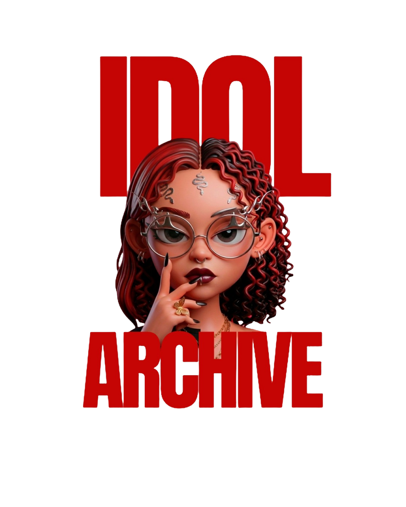

Arquivo Idol
Da música às telas, um espaço para acompanhar artistas, produções e fenômenos que movimentam o entretenimento asiático. Entre lançamentos, narrativas e fandoms, o Arquivo Idol observa a cultura pop que atravessa fronteiras.
Explorar matérias ↓
Muito além dos palcos
O Arquivo Idol acompanha o universo do entretenimento asiático a partir da música, do audiovisual e dos movimentos culturais que aproximam artistas e públicos. A coluna reúne conteúdos sobre K-pop, K-dramas, novelas asiáticas, trajetórias de idols e produções que ganham espaço dentro e fora de seus países de origem. Entre estreias, performances e fenômenos de audiência, buscamos compreender também as histórias e os contextos por trás dessas produções.
Matérias do Arquivo Idol
Novas matérias em breve
Estamos preparando os próximos conteúdos do Arquivo Idol. Enquanto isso, acompanhe as publicações do Inferno Escarlate.
Ver todas as matérias →